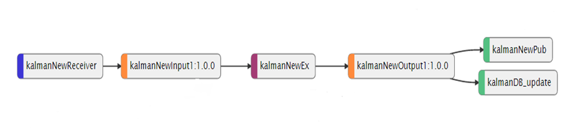
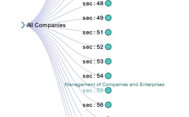
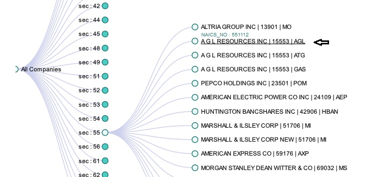
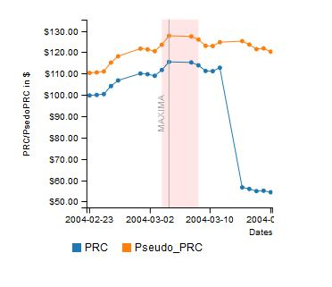
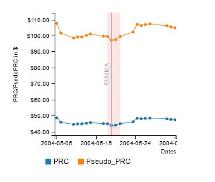
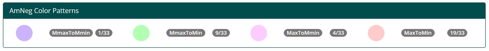
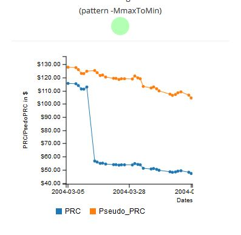

Data analyzing method
Details of all the companies were streamed to WSO2 CEP(Complex Event Processor) by creating a data flow.
Calculate the minimum points and maximum points of the Pseudo prices using Siddhi query language.
- Separated all the pseudo prices regarding to companies.
- Calculate the minima, maxima points using Kalman filter which is an inbuilt function of the Siddhi language.
Siddhi query
partition with (meta_PERMNO of inputStream) // Separate price values regarding to the company
begin
from inputStream #timeseries:kalmanMinMax(meta_PseudoPRC, 0.00001,0.0001, 20, 'minmax')
select meta_PERMNO, meta_date, meta_RET, meta_SHROUT, meta_VOL, meta_RawVol, meta_Turnover,
meta_PRC, meta_PseudoPRC, meta_PseudoPRCn, 0.00001 as meta_Overall_stddev, 0.0001 as
meta_Batch_stddev, 20 as meta_Window_size, extremaType
insert into outputStream;
end;
Explanation
Parameters which were used for the Kalman filter
- Overall standard deviation: 0.00001
- Batch standard deviation: 0.0001
- Window size: 20

Find Companies using Company Tree
All companies are represented by company tree. According to the initial view of company tree companies are categorized based on their NAICS code. First two digit of a NAICS code represent the sector of a company. Description of the sector is displayed by moving mouse pointer close to a node or its text label (figure 1). When click on a node or label it expands all companies related to that category. Then user can find company by the details which are given in labels. When click on the one of label (company name & other details), it generates its price pattern graph (figure 2).
figure 1
figure 2
Data Source and PseudoPrice
PseudoPrice
- PseudoPrice computation : Given a return value RETd on some day d (including dividends and splits) and an initial price Pd-1 a pseudo price can be computed as Pd = (1+RETd) Pd-1 . We use P0 = Initial price on January 1 2004 to initialize the computation.
Data Source
- Data Source : WRDS S&P 500
- Interval : January 1 2004 to 31 December 2015
- RET : Holding Period Return
Maxima and Minima Graphs
For Maxima
Pink area of the graphs are used to represent maxima area. It means that area consists a maximum point. Boundary values of the range are less than 1% (This value can be changed according to requirements.) of its maximum value. User can check that values moving mouse point on the graph.
For Minima
Same as maxima graphs. Pink area of the graphs are used to represent minima area. It means that area consists a minimum point. Boundary values of the range are greater than 1% (This value can be changed according to requirements.) of its minimum value.
AmNeg Graphs
amNeg: Is the behaviour(slope) of two consecutive maxima and a minima. (first value must be a Maxima)
Use this table to identify the type of Amaneg patterns.
Window size of graphs are different. First PRC/PseudoPRC value in the graph shows maximum value of maxima and last PRC/PseudoPRC value in the graph shows minimum value of minima. Users can check that values by moving mouse pointer close to those points. Color dot represent the AmNeg type.
